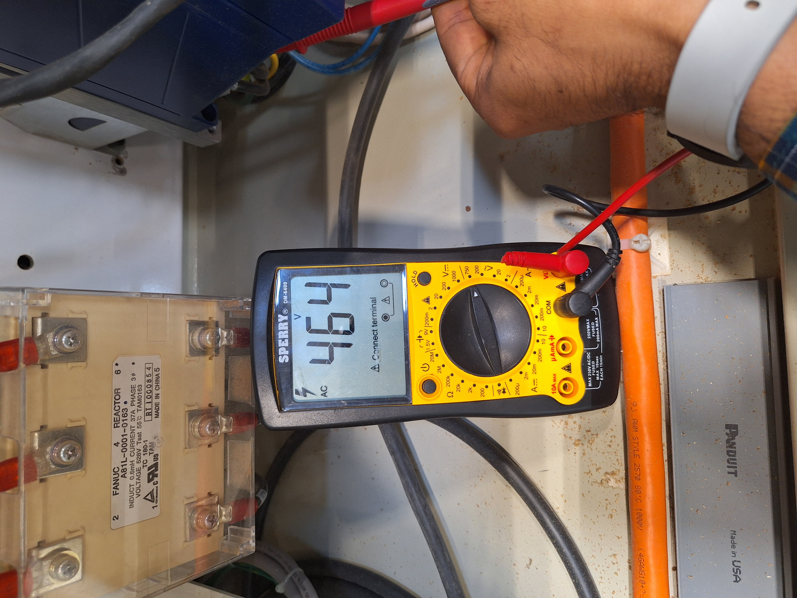
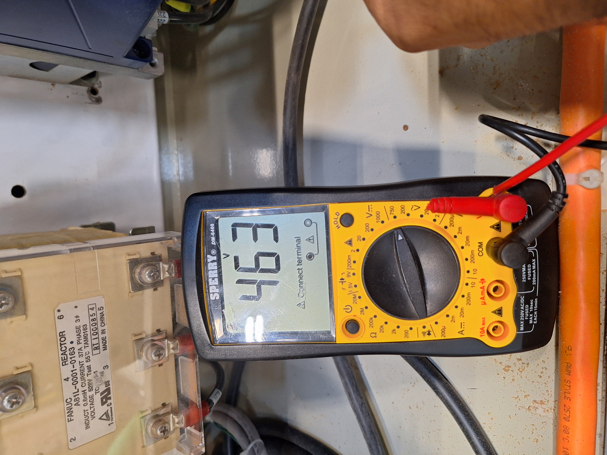
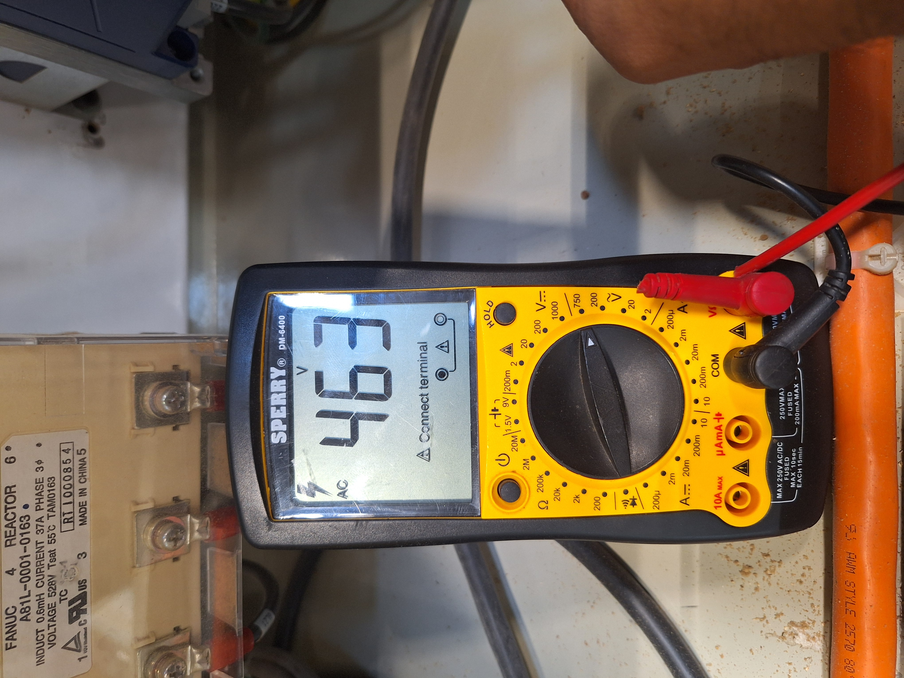

Initial condition
FaultThe CNC stopped with
EX1041 TOOL 102 OVERLOAD FAULT.First questionWas the overload coming from the incoming power, the spindle drive, the motor path or a physical wiring problem?
Industrial Automation · CNC · Reliability
Electrical, controls, motion and mechanical troubleshooting across a spindle overload fault, automatic tool-changer recovery and conveyor material-handling alignment.
Hands-on troubleshooting, fault isolation, corrective work, calibration and production validation in collaboration with the machine operator.
Treating the CNC as one integrated system: power, drive, spindle, controls, automatic tool changing and material handling.
System view
Project media
Case 01
EX1041 TOOL 102 OVERLOAD FAULT.Three separate meter checks were recorded while verifying the incoming three-phase supply. The exact phase-pair order of the archived photos is no longer confirmed, so the images are intentionally presented as sequential checks rather than labeled L1-L2, L2-L3 or L1-L3.



Case 02
Case 03
Skills demonstrated
This public case study intentionally excludes employer-confidential production data, customer information, internal files, network details and proprietary procedures.